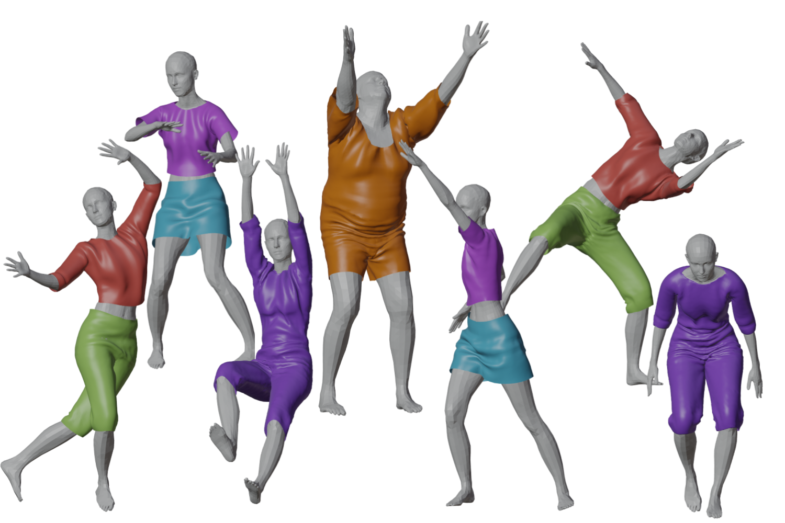

Video
BibTeX
@article{10.1145/3478513.3480479,
author = {Bertiche, Hugo and Madadi, Meysam and Escalera, Sergio},
title = {PBNS: Physically Based Neural Simulation for Unsupervised Garment Pose Space Deformation},
year = {2021},
issue_date = {December 2021},
publisher = {Association for Computing Machinery},
address = {New York, NY, USA},
volume = {40},
number = {6},
issn = {0730-0301},
url = {https://doi.org/10.1145/3478513.3480479},
doi = {10.1145/3478513.3480479},
abstract = {We present a methodology to automatically obtain Pose Space Deformation (PSD) basis for rigged garments through deep learning. Classical approaches rely on Physically Based Simulations (PBS) to animate clothes. These are general solutions that, given a sufficiently fine-grained discretization of space and time, can achieve highly realistic results. However, they are computationally expensive and any scene modification prompts the need of re-simulation. Linear Blend Skinning (LBS) with PSD offers a lightweight alternative to PBS, though, it needs huge volumes of data to learn proper PSD. We propose using deep learning, formulated as an implicit PBS, to un-supervisedly learn realistic cloth Pose Space Deformations in a constrained scenario: dressed humans. Furthermore, we show it is possible to train these models in an amount of time comparable to a PBS of a few sequences. To the best of our knowledge, we are the first to propose a neural simulator for cloth. While deep-based approaches in the domain are becoming a trend, these are data-hungry models. Moreover, authors often propose complex formulations to better learn wrinkles from PBS data. Supervised learning leads to physically inconsistent predictions that require collision solving to be used. Also, dependency on PBS data limits the scalability of these solutions, while their formulation hinders its applicability and compatibility. By proposing an unsupervised methodology to learn PSD for LBS models (3D animation standard), we overcome both of these drawbacks. Results obtained show cloth-consistency in the animated garments and meaningful pose-dependant folds and wrinkles. Our solution is extremely efficient, handles multiple layers of cloth, allows unsupervised outfit resizing and can be easily applied to any custom 3D avatar.},
journal = {ACM Trans. Graph.},
month = {dec},
articleno = {198},
numpages = {14},
keywords = {physics, garment, simulation, deep learning, animation, pose space deformation, neural network}
}